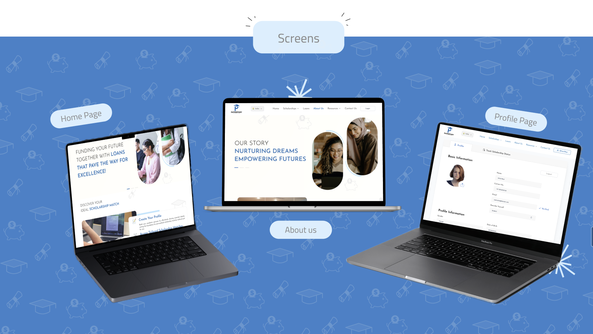
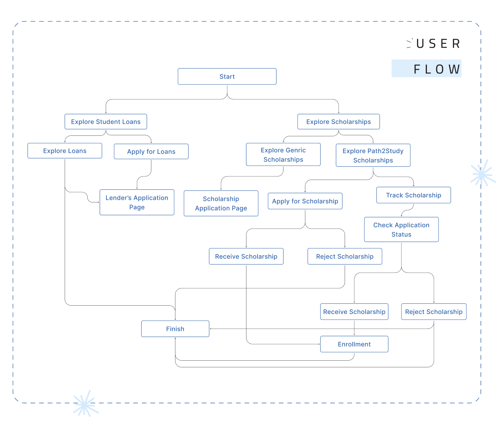
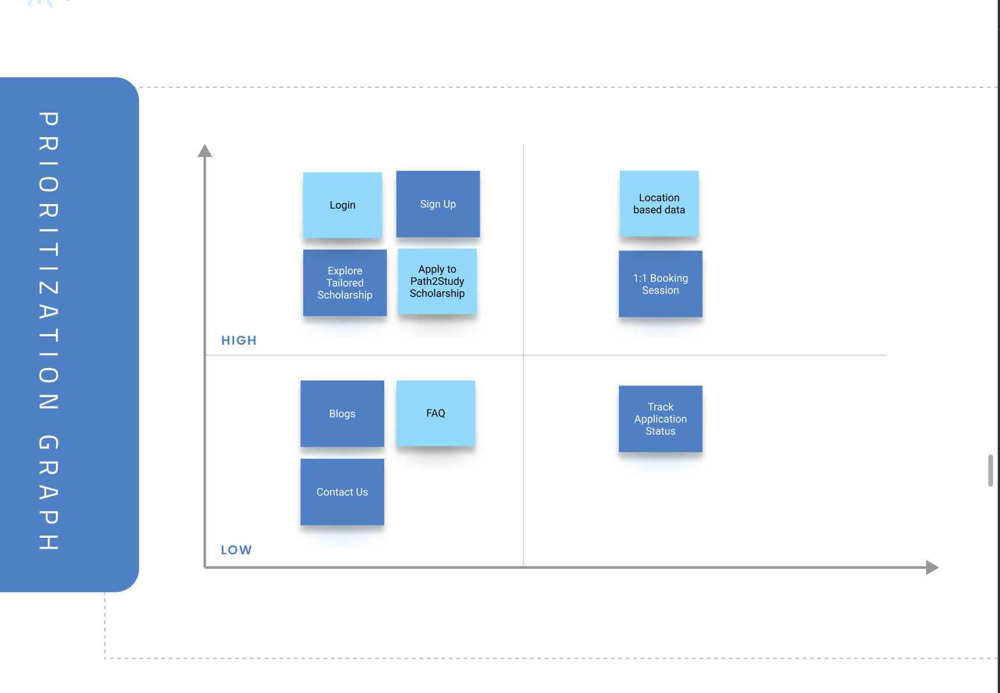
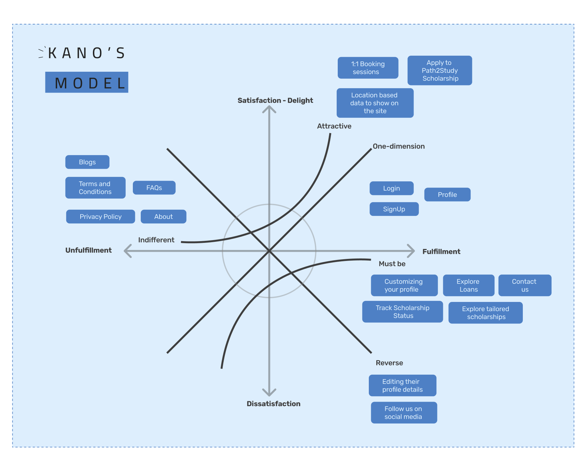
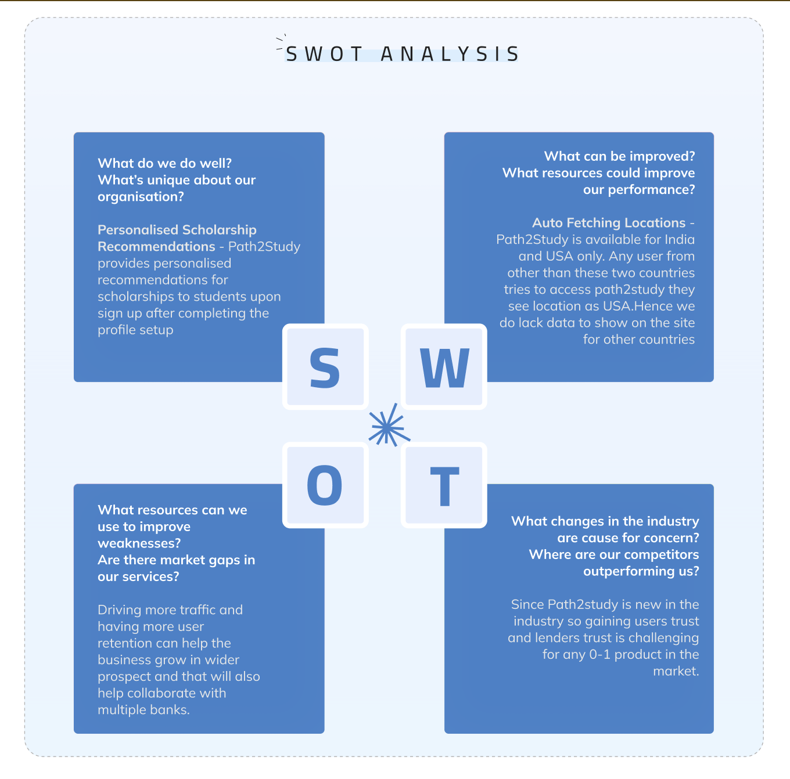

01
The Opportunity
Students planning to study in the USA often struggle to navigate fragmented scholarship and education loan information spread across multiple websites, banks, and institutions.
Path2Study aimed to become a single destination where prospective students could discover USA scholarships, compare education financing options, and receive personalized guidance.
The platform also included an internal admin portal so the business team could manage scholarships, banks, universities, banners, and operational content.
02
The Challenge
Students had to compare scholarships across multiple sources while also researching loan providers separately.
The lack of centralized information increased decision fatigue and reduced confidence during one of the most important decisions in their education journey.
The challenge was to create a platform that made USA education funding easier to discover, understand, and act on.
03
Product Strategy
Rather than positioning Path2Study as another scholarship directory, the platform was designed as a decision-support system.
The experience combined discovery, personalization, funding information, and guidance within a single product journey.
04
What I Led
I led the design side of the project across the student-facing experience and the internal admin portal.
05
Product Experience
The product experience was designed across two connected sides: the student-facing platform and the internal administrative portal.
Student Platform
Scholarship discovery, loan exploration, personalized recommendations, application tracking, profile management, and 1:1 booking support.
Admin Portal
Scholarship management, university management, bank and loan partner management, banner content management, user management, and session availability management.
Connected Journey
The student-facing product and admin portal were designed as connected parts of one operating system, not separate one-off surfaces.
06
Visual Evidence
Available visuals are used here to show Path2Study as a complete product experience, not just a set of isolated screens.

Homepage, About page, and Profile page views showing the public product experience and student account surface.

A flow artifact mapping how students move through loan exploration, scholarship discovery, application tracking, and completion states.

A prioritization artifact used to reason through what mattered most for early platform delivery.

A product strategy artifact used to separate basic expectations, performance features, and delight opportunities.

A strategy artifact used to understand strengths, weaknesses, opportunities, and risks around the product direction.
07
Leading Beyond Design
Path2Study was my first opportunity to lead a product initiative beyond interface design.
Working closely with business analysts, engineers, and stakeholders taught me how product decisions evolve through discussion, negotiation, and technical constraints, not just visual exploration.
The project strengthened my ability to advocate for users while balancing business priorities, client requirements, and delivery realities.
08
Reflection
This project taught me that product design is not only about creating polished interfaces.
It is also about structuring decisions, coordinating with teams, and helping a product move from idea to delivery despite changing requirements.
Path2Study shaped how I think about design ownership, stakeholder communication, and building products that support both users and the teams operating behind the scenes.